Semana 1
Clase virtual

El profesor nos introdujo al curso después de darnos la bienvenida y pedirnos que nos presentáramos. Nos ilustró sobre la importancia de la innovación en proyectos, proporcionándonos una breve pero valiosa definición que resaltaba la creatividad y originalidad como elementos clave. Este inicio no solo estableció la base del curso, sino que también nos inspiró a pensar en cómo aplicar la innovación en nuestros propios proyectos.
Clase presencial
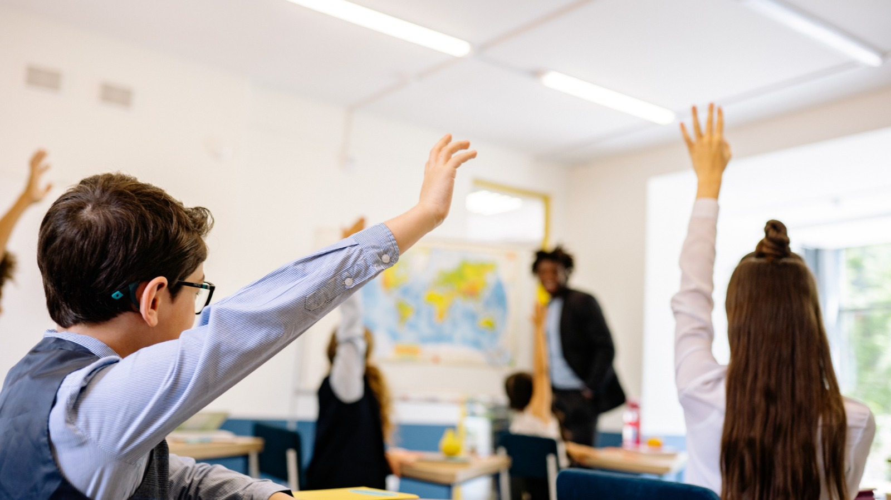Durante la sesión, cada uno de nosotros tuvo la oportunidad de presentarse y compartir sus expectativas para el curso. Se abordaron las perspectivas individuales y se discutió cómo nos sentíamos respecto al programa académico. Además, se hizo hincapié en los temas que se cubrirán a lo largo del año y se recordaron las actividades realizadas en el primer laboratorio. En la clase virtual, se introdujeron conceptos fundamentales como GitHub, HTML, index, códigos, programación, junto con una iniciación al uso de Visual Studio Code como herramienta para el desarrollo de proyectos.
Semana 2
Clase virtual
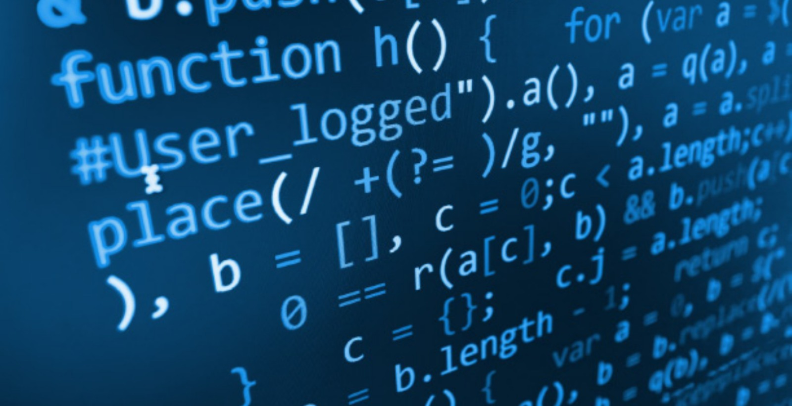En nuestra clase virtual hemos profundizado en técnicas para mejorar y estilizar las páginas web, además de explorar métodos para cargar el trabajo realizado en Visual Studio en plataformas como Netlify, GitHub y usar Drive como servidor. En lo particular me interesó mucho el hecho de estilizar las páginas y poder modificar a gusto propio.
Clase presencial
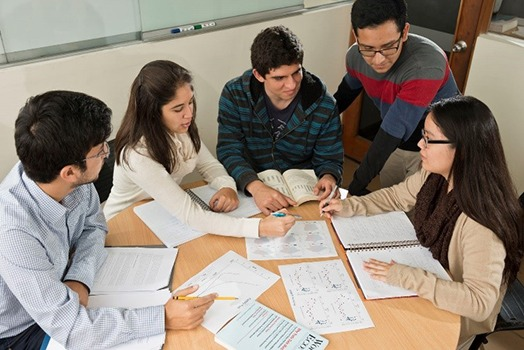Durante esta semana, nos organizamos por equipos para idear soluciones tecnológicas alineadas con los Objetivos de Desarrollo Sostenible (ODS), presentando posteriormente cada propuesta. En la sesión virtual, iniciamos la creación de nuestra página web, donde se espera subir y resumir semanalmente nuestro progreso. Además, exploramos técnicas de estilización web y nos familiarizamos con herramientas como Netlify y el uso de Google Drive como servidor para alojar contenido.
Semana 3
Clase virtual
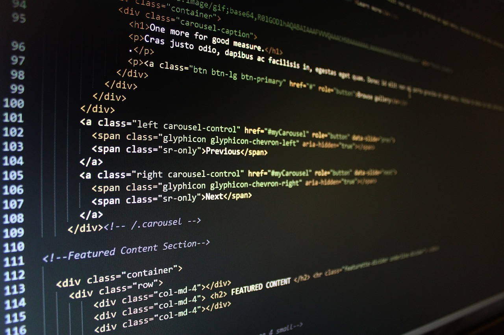Durante la clase virtual, profundizamos en el desarrollo de nuestras páginas web, centrándonos en la aplicación práctica del archivo index.html. Además, adquirimos conocimientos sobre cómo incorporar imágenes en las páginas, mejorar la codificación y comprender la estructura del lenguaje HTML, así como las definiciones básicas de CSS. También exploramos los distintos tipos de editores disponibles para el desarrollo web.
Clase presencial
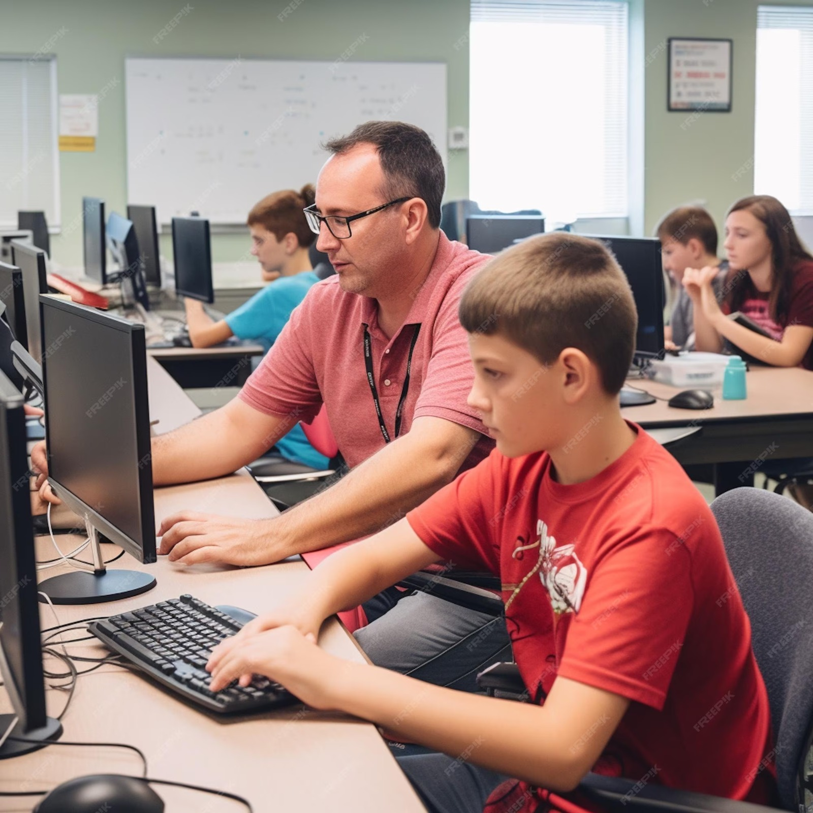Nos organizamos en nuestros grupos y llevamos a cabo una lluvia de ideas sobre problemáticas y soluciones relacionadas con los Objetivos de Desarrollo Sostenible (ODS). Posteriormente, presentamos estas ideas ante toda la clase. Además, avanzamos en el desarrollo de la codificación de nuestra página web con la guía y apoyo del profesor.
Semana 4
Clase virtual
Durante la sesión virtual, elegimos el diseño de nuestra página para la entrega y progresamos al incorporar las imágenes que formarían parte de ella, organizándolas por semana. El profesor nos proporcionó una biblioteca de opciones de diseños adaptables a nuestro proyecto, lo que resultó ser de gran utilidad y apoyo para nuestro trabajo.
Clase presencial
Realizamos una lluvia de ideas en grupo, enfocada en proyectos que involucraban el uso de Arduino. Posteriormente, seleccionamos un proyecto específico que llevaremos a cabo en equipo a lo largo del ciclo académico. Además, avanzamos en la codificación de nuestro proyecto con la orientación y asistencia del profesor durante la parte final de la clase.
Semana 4
Clase virtual
Durante la sesión virtual, elegimos el diseño de nuestra página para la entrega y progresamos al incorporar las imágenes que formarían parte de ella, organizándolas por semana. El profesor nos proporcionó una biblioteca de opciones de diseños adaptables a nuestro proyecto, lo que resultó ser de gran utilidad y apoyo para nuestro trabajo.
Clase presencial
Realizamos una lluvia de ideas en grupo, enfocada en proyectos que involucraban el uso de Arduino. Posteriormente, seleccionamos un proyecto específico que llevaremos a cabo en equipo a lo largo del ciclo académico. Además, avanzamos en la codificación de nuestro proyecto con la orientación y asistencia del profesor durante la parte final de la clase.
Semana 5
Clase virtual
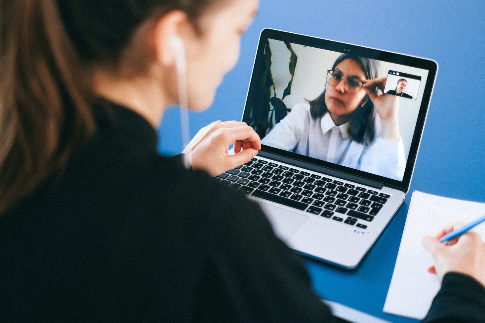Durante la sesión virtual, exploramos los conceptos fundamentales de CSS, JS y HTML. Además, nos introdujimos en el tema del hosting y dominio, abordando plataformas como Google Sites y WIX, comprendiendo sus aplicaciones y cómo utilizarlos de manera efectiva.
Clase presencial
Comenzamos con la entrega preliminar de enlaces para que el profesor pudiera revisar el progreso que habíamos logrado durante el primer periodo. En grupos, discutimos cómo planificar nuestro avance semanal y establecimos la metodología de trabajo a seguir para cumplir con los objetivos establecidos.
Semana 6
Clase virtual
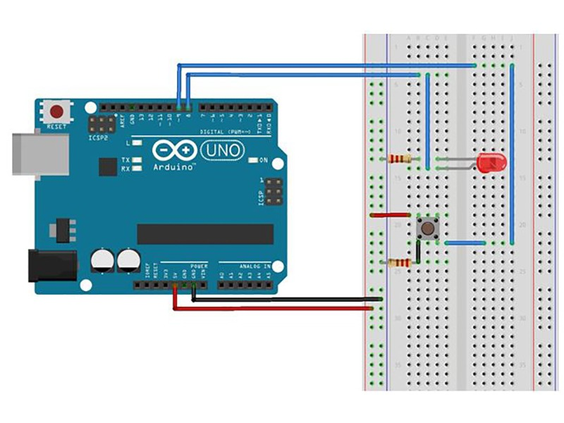Durante la sesión en línea, exploramos los principios fundamentales de la electrónica y pudimos manejar conceptos como la relación de cables, arduinos, etc.
Clase presencial
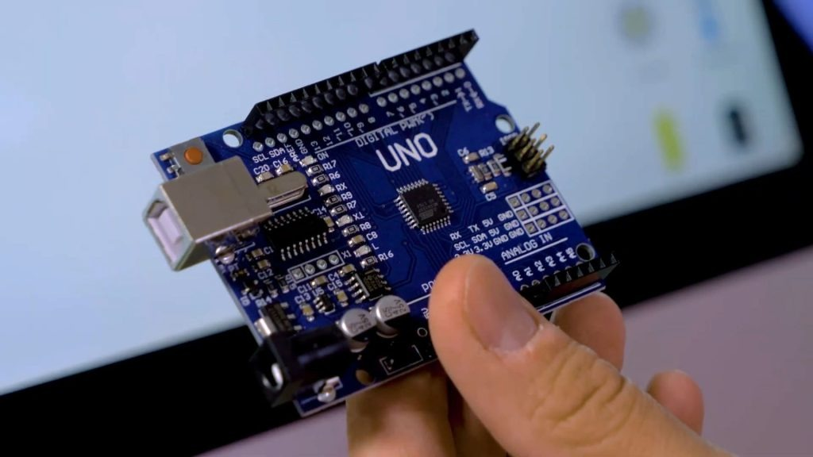Repasamos los componentes de Arduino y sus conexiones con el protoboard, el LED, y la resistencia. Trabajamos en la integración de estos elementos con Arduino para lograr su funcionamiento adecuado.
Semana 7
Clase virtual
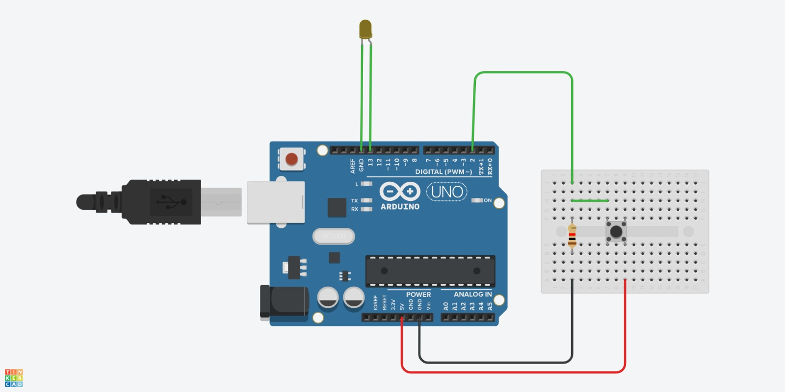Durante la sesión de clase virtual, utilizamos Tinkercad para ejemplificar conexiones digitales, lo cual resultó sumamente útil para comprender su funcionamiento. Además, abordamos temas de codificación relacionados con estas conexiones, lo que enriqueció nuestra comprensión del proceso.
Clase presencial
Durante la clase presencial, revisamos los conceptos previamente abordados en la sesión virtual. El profesor nos presentó proyectos de años anteriores, lo que nos proporcionó una visión clara de los resultados alcanzados en proyectos similares. Esta exposición nos permitió planificar y definir la problemática que abordaremos en nuestro propio proyecto, brindándonos una guía más precisa para avanzar en nuestro trabajo.
Semana 8
Clase virtual
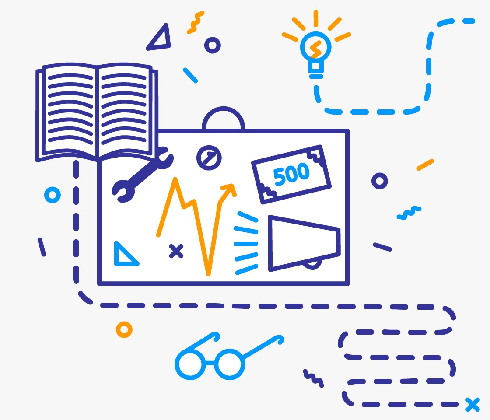Durante la sesión virtual, el profesor asignó proyectos en Tinkercad que representaban una parte significativa de nuestra calificación. Estos proyectos abarcaron codificaciones y la manipulación de elementos electrónicos, ofreciéndonos una oportunidad crucial para aplicar y desarrollar nuestros conocimientos en esta área.
Clase presencial
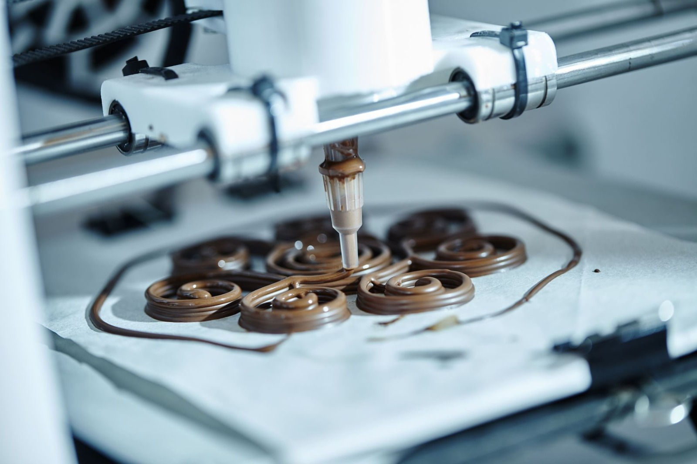En la clase presencial, nos introdujimos al mundo de la fabricación digital, comprendiendo sus componentes, herramientas y aplicaciones. Destacamos la importancia de la impresora 3D como una herramienta clave para construir objetos tridimensionales. Asimismo, exploramos el uso de las cortadoras láser, que permiten cortar y grabar materiales con precisión utilizando un rayo láser, lo qu
Semana 9
Clase virtual

Durante la sesión virtual, nos organizamos en grupos para discutir el proyecto y su relevancia en el contexto de la fabricación digital, además de abordar la codificación necesaria para su desarrollo.
Clase presencial

Durante la clase presencial, nos reunimos en grupos y empezamos a trabajar con ejercicios de codificación de forma física, utilizando elementos de conectividad que obtuvimos del laboratorio de fabricación digital. Esta experiencia nos permitió ejemplificar los conceptos que el profesor había enseñado en clase.
Semana 10
Clase virtual
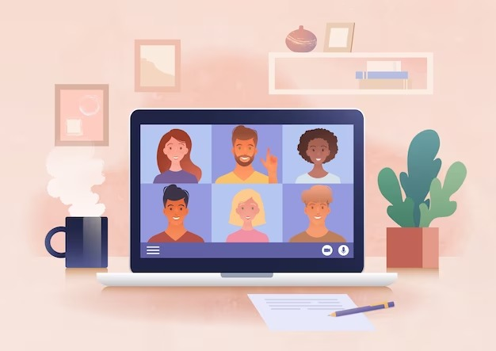En la sesión virtual, el profesor nos asignó aulas virtuales donde llevamos a cabo la elaboración del proyecto en formato de presentación de diapositivas (PPT). Este consistía en un índice detallado de los elementos necesarios para la presentación final, abordando aspectos clave como la problemática, la solución propuesta y los detalles del proyecto.
Clase presencial
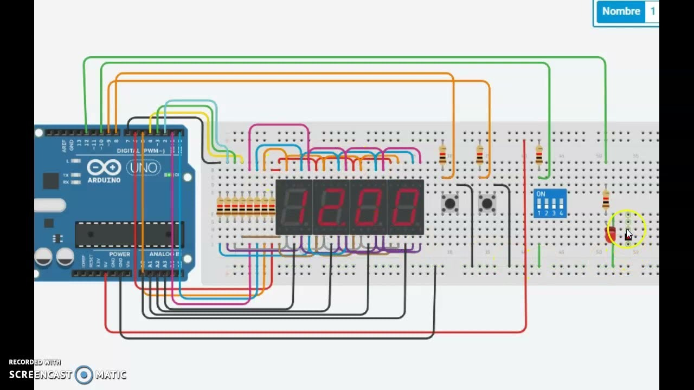Durante las clases presenciales, el profesor revisó nuestro progreso y nos ofreció comentarios constructivos que nos permitieron mejorar y ajustar ciertos aspectos del proyecto. Esta retroalimentación fue fundamental para perfeccionar nuestra labor.
Semana 11
Clase virtual
El profesor nos proporcionó una descripción detallada de los requisitos para el proyecto final, los cuales abarcaban la creación de un video publicitario, un logo y otros elementos específicos necesarios para su culminación.
Clase presencial
En la sesión presencial, avanzamos en la codificación con la orientación directa del profesor, lo cual resultó ser un gran apoyo para nuestro grupo. Esta guía nos permitió progresar significativamente en el desarrollo del proyecto.
Semana 12
Clase virtual

En la sesión virtual, el profesor nos asignó a aulas virtuales donde revisó grupo por grupo el progreso del entregable, el cual ya se encontraba en un estado intermedio de desarrollo.
Clase presencial
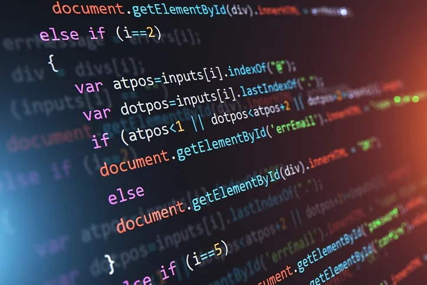Durante las clases presenciales, el profesor brindó apoyo a todos los grupos ofreciendo correcciones y orientación para mejorar el proyecto.
Semana 13
Clase virtual
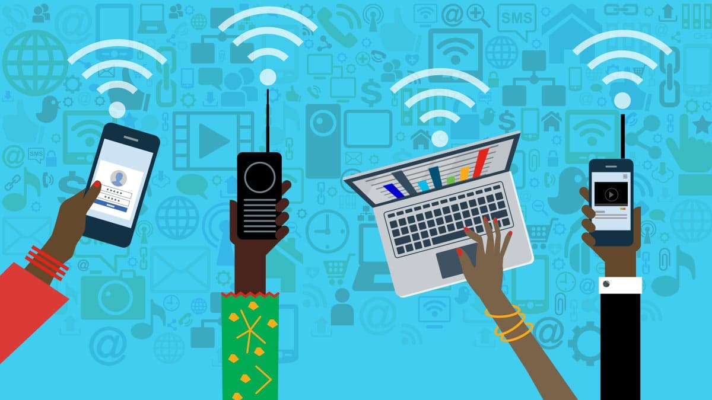Esta semana, exploramos la teoría detrás de Internet de las Cosas y aprendimos sobre el control remoto para encender y apagar una luz. Posteriormente, discutimos los progresos realizados en nuestro proyecto y consideramos posibles mejoras para el mismo.
Clase presencial
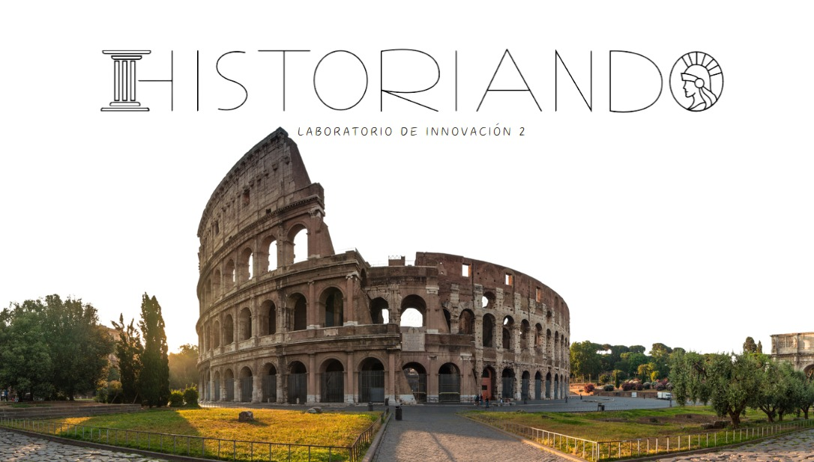Durante las clases presenciales seguimos con el asesoramiento de nuestro proyecto, el cual ya estaba en un 80%
Semana 14
Clase virtual
Nos dividimos en grupos y durante nuestra sesión colaborativa, logramos avanzar significativamente en el desarrollo de nuestro proyecto. Trabajamos en equipo, compartiendo ideas, resolviendo desafíos y delineando estrategias para alcanzar los objetivos planteados.
Clase presencial
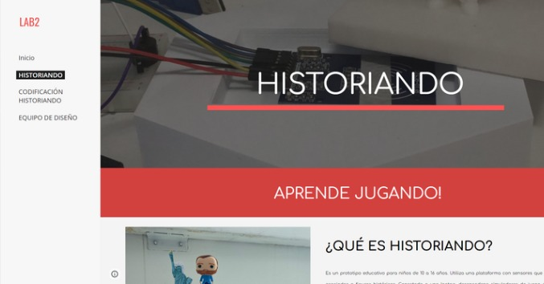En la reunión se abordaron los avances del proyecto, se discutieron mejoras en el diagrama de flujo y la incorporación de nuevos componentes. Además, se planteó la creación de la página web para nuestro prototipo.
Semana 15
Clase virtual
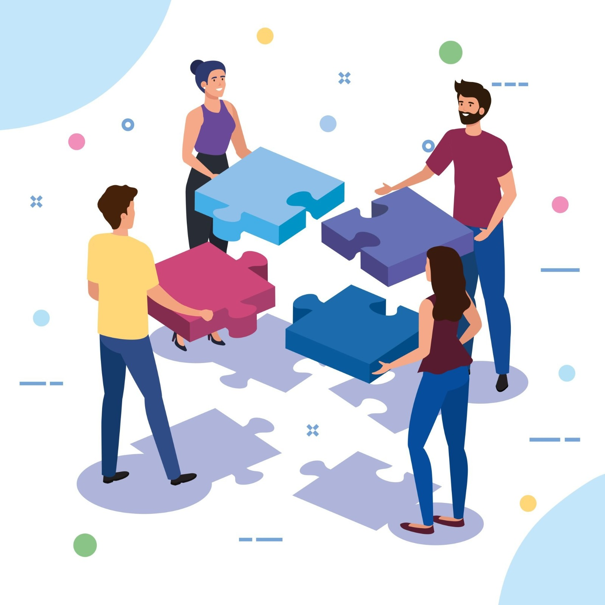Durante nuestra sesión grupal, nos reunimos y logramos coordinar últimos ajustes a nuestro proyecto.
Clase presencial
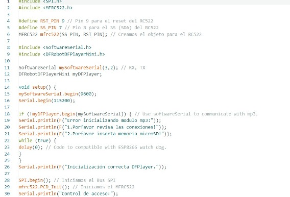Llevamos a cabo la última revisión exhaustiva de nuestro proyecto final, asegurándonos de que estuviera completo y listo para su presentación. Además, grabamos los videos necesarios para la entrega final, asegurándonos de que reflejaran adecuadamente el trabajo y los resultados obtenidos. Este proceso marcó el cierre y la culminación de nuestro arduo trabajo en el proyecto.
Semana 16
Clase virtual
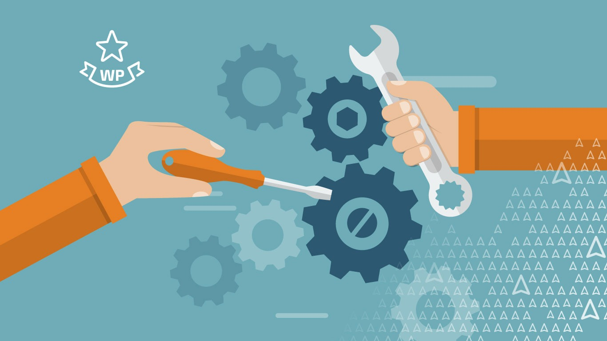Nos reunimos en aulas virtuales coordinando los últimos puntos de exposición. También la presentación de nuestra bitácora
Clase presencial
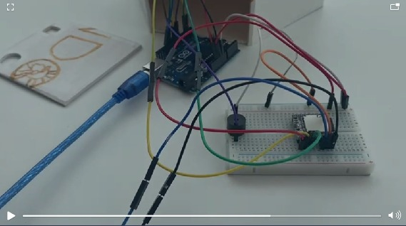Se llevó a cabo la presentación definitiva del proyecto desarrollado a lo largo de PROM 2 y 3, donde se detalló el funcionamiento y la solución que ofrece "Historiando". Durante esta exposición, se mostraron los resultados obtenidos y se resumió todo lo aprendido a lo largo del ciclo 2023-2, destacando los logros y el impacto del proyecto.